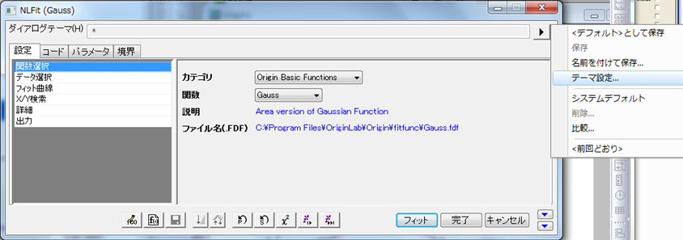
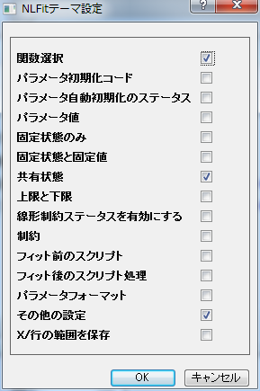

テーマ付きのフィット
テーマの設定
NLFitテーマ設定ダイアログでは、テーマに何を保存するかを指定することができます。これは下図のように開くことができます。
- 
- 上側パネルのダイアログテーマのコントロールの右にある三角のボタンをクリックしてメニューを表示します。
- メニューから「テーマの設定」を選択し、「NLFitテーマ設定」ダイアログを開きます。
NLFitテーマ設定ダイアログには一連のチェックボックスがあります。
- 
-
- フィット関数とこのフィット関数のカテゴリーを保存するかどうかを指定します。
-
- コードタブのパラメータ初期化にパラメータ初期化コードを保存するかどうかを指定します。
-
- パラメータ初期化を選んだ場合に、コードタブに自動パラメータ初期化の状況を保存するかどうかを指定します。
-
- パラメータタブのテーブルにパラメータ値を保存するかどうかを指定します。関数やテーマで自動パラメータ初期化が有効になっている場合、このオプションは効果がありません。
-
- パラメータタブで、固定チェックボックスの状況を保存するかどうかを指定します。
-
- パラメータタブで、共有チェックボックスの状況を保存するかどうかを指定します。共有チェックボックスは、次の条件のいずれかに合ったときのみ利用できます。
- グローバルフィットは、複数範囲のデータを入力したときに、複数データフィットモードドロップダウンリストで選択します。
- 複製の数は、1つの範囲を入力するときには、1以上となります。
-
- パラメータの下側または上側境界を保存するかどうかを指定します。
-
- コードタブの制約ページで、線形制約条件を有効にするチェックボックスの状態を保存するかどうかを指定します。
-
- フィットパラメータに対して、一般線形制約を保存するかどうかを指定します。
-
- フィット後に実行するスクリプトを保存するかどうかを指定します。
-
- パラメータの有効桁数を保存するかどうかを指定します。
-
- ダイアログにある他のすべての設定を保存するかどうかを指定します。
-
- 設定タブのデータ選択のX/行範囲を保存するかどうかを指定します。